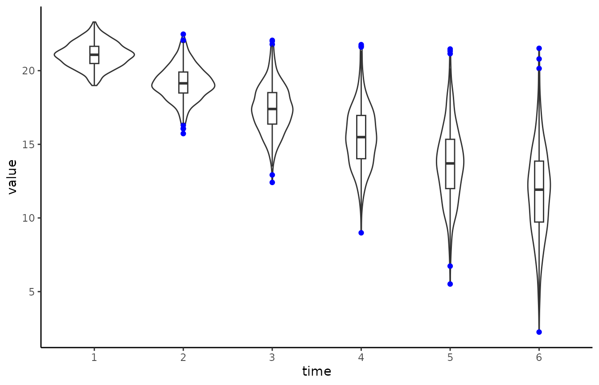
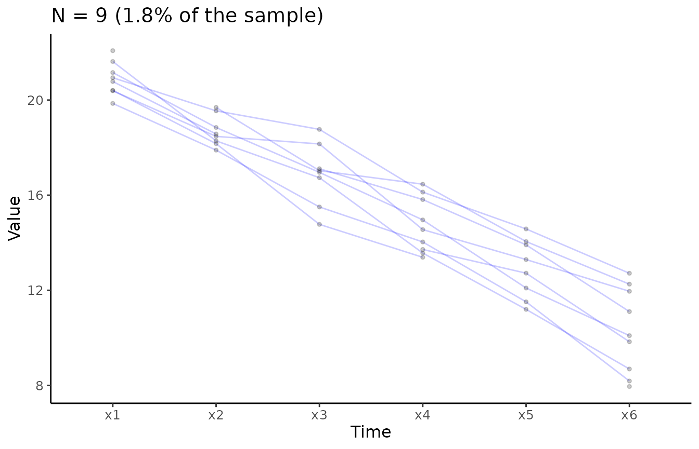
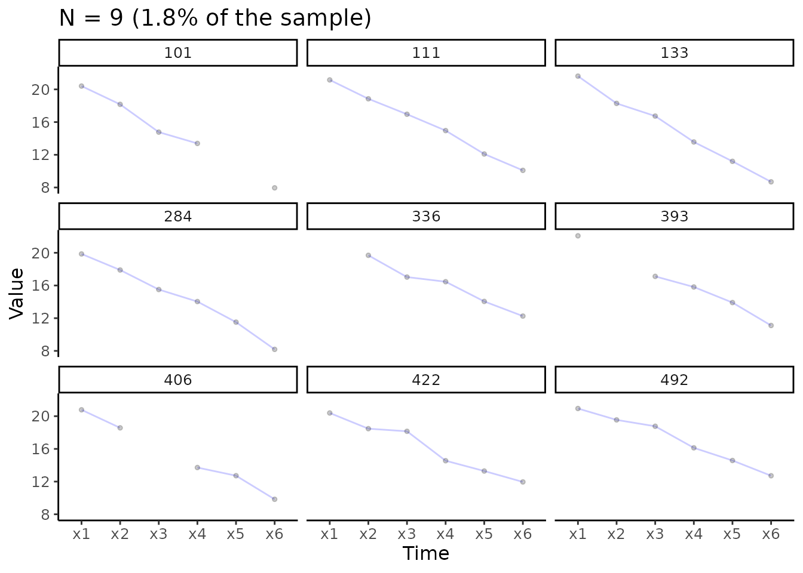

It’s important to understand the data. For longitudinal analyses it
may be helpful visualise the individual trajectories. A more detailed
overview of the rational behind this be found in Ghisletta and McArdle (2012) or Chapter 2 in Grimm, Ram, and Estabrook (2017). Most basic (and advanced) plots
can be done relatively easily using already existing R packages. THe
plotting functions of the lcsm package actually build on
function from other packages. I’ll show some examples illustrating how
to visualise longitudinal data using the R package ggplot2
(Wickham 2016). The function
plot_trajectories() of the lcsm R package
builds on ggplot2 to make it a little easier to visualize
individual trajectories.
I’ll show how to visualise 6 repeated measurements from the data set
data_bi_lcsm from this package.
Prepare data
When working with repeated measures I like to create a vector of the variables so I don’t have to type the names again and again, but this really needed and everything would also work without doing this.
# Create a vector of variable names
x_var_list <- c("x1", "x2", "x3", "x4", "x5", "x6")
# Or simply use the paste function and R might work too
paste0("x", 1:6)
#> [1] "x1" "x2" "x3" "x4" "x5" "x6"The repeated measurements need to be in “long” format when using
ggplot2 for plotting. Note that this is different to the
data structure needed for lavaan, so the same data can’t
just be used for plotting without restructuring - lavaan
expects the data to be in “wide” format.
I’ll show how to transform the data anyway because the plotting
function plot_trajectories() is limited and other plots may
be more appropriate. Fortunately, this is a relatively straightforward
to do, my favourite function to do this is pivot_longer()
from the tidyr package. Next, to get the correct order of
repeated measures the time variable needs to be ordered in the correct
order. R know how to order numbers but only if the variable is actually
numeric. If you’re using variable names that also include letters R
might get confused and get the order wrong. Imagine you have four
repeated measurements, week 1 to 3 and week 10 and the following
variable names: w1, w2, w3,
w10. R will get this order wrong and thinks that
w1 is followed by w10 and then w2
and w3. To avoid this there are a couple options, I usually
do one of the two:
- Create a factor with the original variable names using the in build
factor()function from base R - Extracting the number from the string and then creating a factor (see example below)
# Create long data set
data_long <- data_bi_lcsm %>%
select("id", all_of(x_var_list)) %>%
# Pivot data long
pivot_longer(cols = all_of(x_var_list), names_to = "time", values_to = "value") %>%
mutate(
# Extract number from time variable
time = str_extract(time, "\\d+"),
# At the moment the numbers in the time are 'characters'
# So here it gets transformed to a numeric value
time = factor(as.numeric(time))
)These data manipulations are necessary for plotting longitudinal data
in R and the plot_trajectories() function from this package
is doing this transformation automatically in the background.
Violin plots
# Create violin plot with outliers in colour blue
# Also add boxplot
ggplot(data_long, aes(time, value)) +
geom_violin() +
geom_boxplot(width = 0.1, outlier.colour = "blue") +
theme_classic()
#> Warning: Removed 154 rows containing non-finite values
#> (`stat_ydensity()`).
#> Warning: Removed 154 rows containing non-finite values
#> (`stat_boxplot()`).
Similar visualisations that communicate the data in a more open way have been developed for example by Allen et al. (2019) and Langen (2020).
Longitudinal plots
While the violin plot focuses on more on the overall distribution,
the following plots highlight the individual trajectories for each case
in the data. Longitudinal data can be visualised using the
plot_trajectories() function from the lcsm
package. Here only 1.8% of the data is visualised using the argument
random_sample_frac = 0.018. Only consecutive measures are
connected by lines as specified in
connect_missing = FALSE.
Overlaid individual trajectories
# Create longitudinal plot for construct x
# Select ransom 1.8% of the sample
plot_trajectories(data = data_bi_lcsm,
id_var = "id",
var_list = x_var_list,
xlab = "Time", ylab = "Value",
connect_missing = FALSE,
random_sample_frac = 0.018,
title_n = TRUE)
#> Warning: Removed 1 row containing missing values (`geom_line()`).
#> Warning: Removed 4 rows containing missing values (`geom_point()`).
Separate individual trajectories
# Create plot for construct x
# Add facet_wrap() function from ggplot2
plot_trajectories(data = data_bi_lcsm,
id_var = "id",
var_list = x_var_list,
xlab = "Time", ylab = "Value",
connect_missing = F,
random_sample_frac = 0.018,
title_n = T) +
facet_wrap(~id)
#> Warning: Removed 1 row containing missing values (`geom_line()`).
#> Warning: Removed 4 rows containing missing values (`geom_point()`).